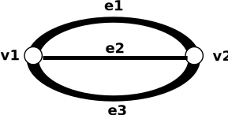

Graph Theory L-1 → Overview & Basic Terminology of Graph Theory
Definition → A graph G is mathematical structure consisting of two sets V and E where V is a non-empty set of vertices and E is a non-empty set of edges
Example:


Basic Teminology
1→ Trival Graph → A graph consiting of only one vertex and no edge
Example: 0 v1
2→ Null Graph → A graph consisting n vertices and no edges.
Example: 0v1 0v2 0v3 0v4
3→ Directed Graph→ A graph consisting the direction of edges.
Example:

4→ Undirected Graph → A graph which is not directed then it is called undirected graph.
5→ Self Loop → If edge is having the same vertex as both its end vertices is called self loop.
Example:

6→ Proper Edge → An edge which is not self loop is called proper edge.
7→ Multi Edge→ A collection of two or more edge having identical end point.
Example:
Terminology related to graph
8→ Simple Graph → A graph does not contain any self loop and multi edge.
9→ Multigraph → A graph does not contain any self loop but contain multiedge is called multi graph
Example:
10→ Pseudo Graph → A graph contains both self loop and multiedge.
Example:
11→ Incidence and Adjancency → Let ek be an edge joining two vertices vi and vj the ek is said to be incidenct of vi and vj.
Two vertices are said to be adjacent if there exist an edge joining this vertices.
Example:
For v1 and v3, e1 is incidence and for e1, v1 and v3 will be adjacent
12→ Degree of Vertex → The degree of vertex V in a graph G written as d(V) is equal to number of edges which are incident on v with self loop counted twice.
Example:
Here d(v1) = 2, d(v2) = 4
d(v3) = 2, d(v4) = 3
d(v5) = 2, d(v6) 2
d(v7) = 1 and d(v8) = 0
13→ Isolated Vertex and Pendant Vertex→ A vertex having degree 0 is called isolated vertex and a vertex having degree 1 is called pendant vertex.
14→ Finite and Infinite graph → A graph with a finite number of vertices as well as edge is called finite graph other wise it is an infinite graph.
Example:
Finite
Infinite
Some Questions
Q1 → Which of the following is true for given graph?
1- deg(p3) = 3
2- deg(p6) = 2
3- deg(p1) = 2
4- deg(p2) = 1
Q2 → Which of the following is pseudo graph?
A
B
hint: the graph which have multiedge and self loop
Q3 → Number of isolated vertex in follwoing graph?
Q4 → If V = {v1, v2, v3, v4, v5},
E = {(v1, v4), (v2, v3), (v3, v4), (v4, v5)},
f : V → (Indian cities)
g : E → N,
f(v1) = Delhi, g((v1, v4)) = 199
f(v2) = Raipur, g((v2, v3)) = 697
f(v3) = Bhopal, g((v3, v4)) = 500
f(v4) = Agra, g((v4, v5)) = 90
f(v5) = Aligarh.
Then to label after drawing the diagrams of the graph